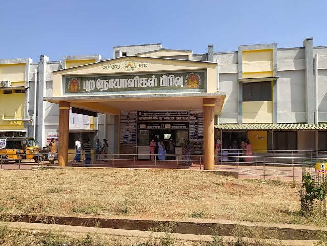

Tenkasi District Hospitals
Providing quality healthcare services through government hospitals, private hospitals, primary health centres, and specialty medical institutions across Tenkasi District.
💙 List of Hospitals
| 🏥 Category | 📊 Details |
|---|---|
| Private Hospitals | 40+ |
| Primary Health Centres (PHCs) | 50+ |
| Emergency Services | 24×7 |
| Ambulance Service | Available |
| Specialist Doctors | 500+ |
| Diagnostic Laboratories | 100+ |
Government Hospitals in Tenkasi District
Government hospitals in Tenkasi District provide affordable and quality healthcare services to people from both urban and rural areas. These hospitals are managed by the Tamil Nadu Government and offer medical treatment at low or no cost. They play an important role in improving public health and ensuring access to essential healthcare facilities.
Major government hospitals provide outpatient (OP), inpatient (IP), emergency care, maternity services, child healthcare, vaccination programs, laboratory testing, and specialist consultations. They also conduct various public health awareness and disease prevention programs.
🏥 Government Hospital Highlights
| Category | Details |
|---|---|
| Main Hospital | Government District Headquarters Hospital, Tenkasi |
| Ownership | Tamil Nadu Government |
| Services | General Medicine, Surgery, Maternity, Pediatrics |
| Emergency Care | 24 Hours Available |
| Cost | Free or Low Cost Treatment |
Government Hospital Services
- 🏥 General Medical Treatment
- 👶 Mother & Child Care
- 💉 Vaccination Programs
- 🚑 24×7 Emergency Services
- 🧪 Laboratory Tests
- 💊 Free Medicines
- 🩺 Specialist Doctors
Private Hospitals in Tenkasi District
Private hospitals in Tenkasi District provide advanced healthcare facilities with modern medical equipment and experienced specialists. These hospitals offer high-quality treatment, diagnostic services, surgeries, and specialized care for various medical conditions.
Many private hospitals are equipped with intensive care units (ICU), operation theatres, digital laboratories, scanning facilities, pharmacies, and ambulance services to ensure better patient care.
🏥 Private Hospital Highlights
| Category | Details |
|---|---|
| Ownership | Private Organizations |
| Facilities | ICU, Laboratory, Pharmacy, Scan Centre |
| Specialists | Cardiology, Orthopedics, Pediatrics, Gynecology |
| Appointment | Online & Offline Booking |
| Emergency | 24 Hours Available |
Private Hospital Services
- 🩺 Specialist Consultation
- 🏥 Advanced Surgery
- 💓 Cardiac Care
- 🦴 Orthopedic Treatment
- 👶 Child Healthcare
- 🔬 Modern Diagnostic Laboratory
- 🚑 Ambulance Services
Emergency & Rural Healthcare Services
Emergency medical services in Tenkasi District ensure quick medical assistance during accidents, natural disasters, and serious illnesses. Ambulance services, trauma care units, and emergency departments operate throughout the district to provide immediate treatment.
Primary Health Centres (PHCs) and Community Health Centres (CHCs) located in rural areas provide essential healthcare services such as maternal care, immunization, disease prevention, health education, and regular medical check-ups for village residents.
🚑 Emergency Healthcare Highlights
| Category | Details |
|---|---|
| Emergency Service | 24×7 Ambulance & Trauma Care |
| Rural Health Centres | Primary Health Centres (PHCs) |
| Village Services | Vaccination, Health Camps, Medical Checkups |
| Health Programs | Maternal & Child Welfare |
| Awareness | Public Health & Disease Prevention |
Emergency & Rural Healthcare Services
- 🚑 Emergency Ambulance Service
- 🏥 Trauma & Accident Care
- 💉 Vaccination Programs
- 👩⚕️ Maternal Healthcare
- 👶 Child Immunization
- 🏡 Village Health Camps
- 📢 Public Health Awareness Programs
Move to Top